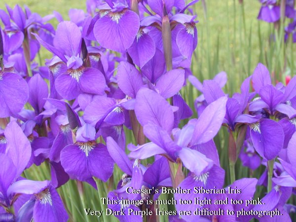

|

|
Back to Siberian Iris Master Page
- Height: 30 in. (76 cm)
- Season: Mid to Late
- Description:
Standards violet narrow & upright; falls rich round violet with white signals &
golden hafts; one of best foliage forms after bloom & has red spathes prior to
bloom which is outstanding in the perennial border; Morgan Award
Diploid
This flower is a very deep, velvety violet, so velvety that when
viewed by the human eye it appears to absorb light, not reflect it.
HOWEVER this color is proving to be difficult to photograph.
At this time we present two images, the upper shows the form of the blossum but
is much too light and too pink. The lower image was obtained by putting the
blossum on a flat bed scanner. The depth of color is more accurately portrayed.
|